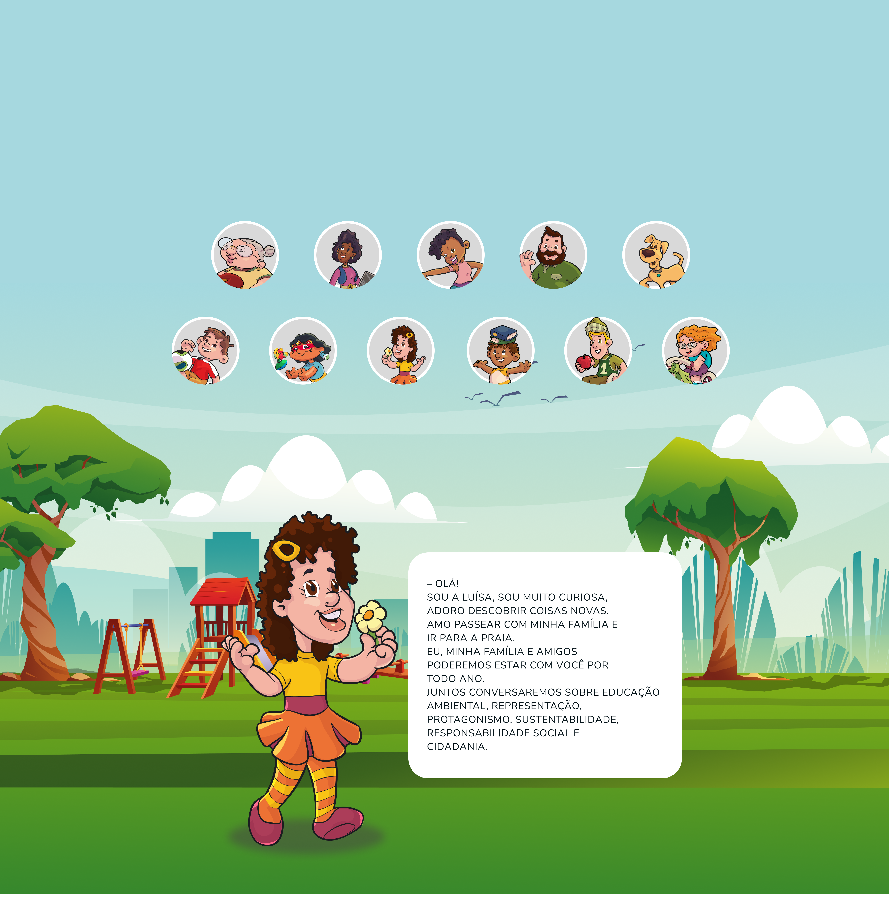
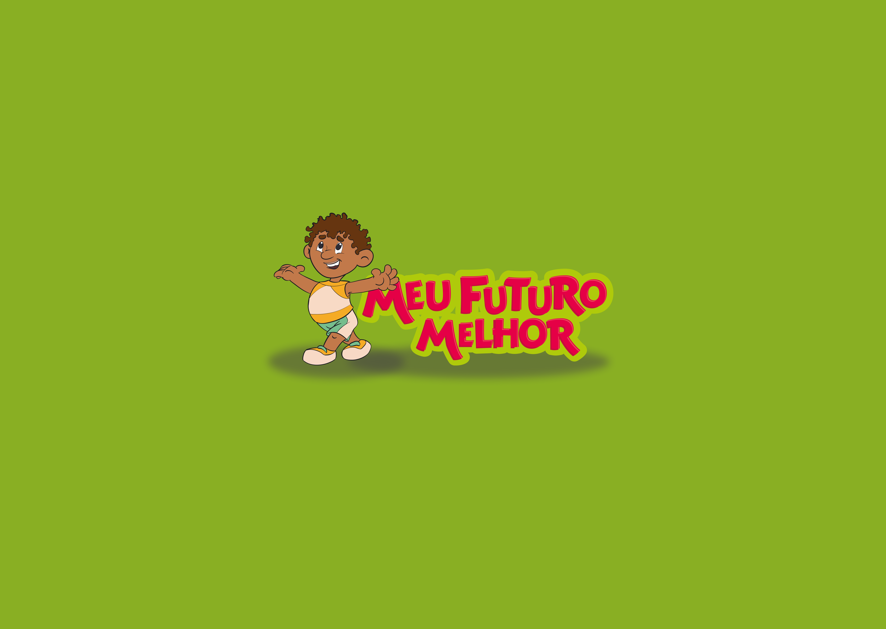
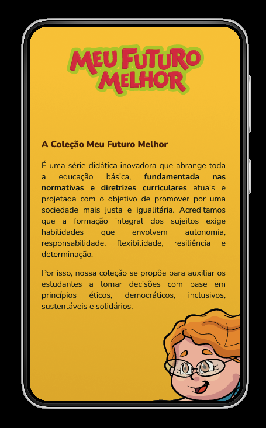
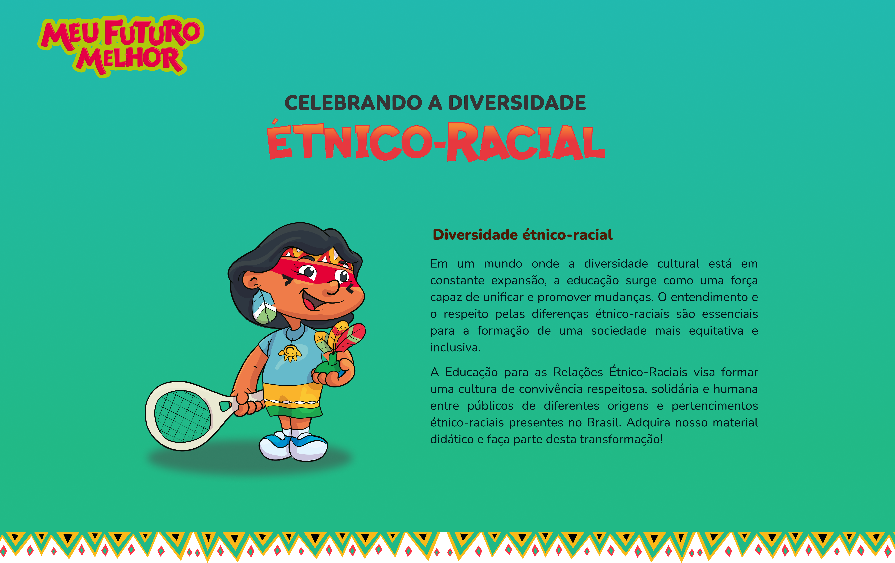
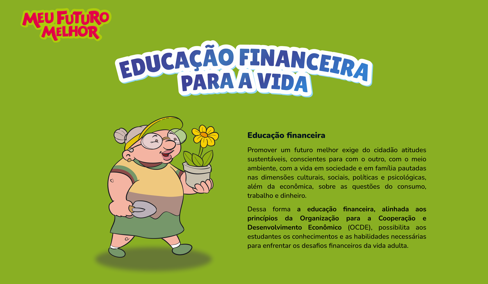

Página de colecção — grelha de livros com filtros por faixa etária e tema

Página de livro — sinopse, excerto, autora e opções de compra
Site para a colecção editorial "Meu Futuro Melhor" da Editora Formar — projecto de web design com foco em content strategy, hierarquia tipográfica e UX editorial desenhado para um público infantojuvenil e os seus mediadores.
"Um site para crianças não pode só ser bonito — tem de ser compreensível para quem ainda está a aprender a ler o mundo digital."

A colecção "Meu Futuro Melhor" da Editora Formar é uma linha de livros orientados ao desenvolvimento pessoal e à orientação vocacional para jovens. O desafio foi criar um site que funcionasse simultaneamente para dois públicos distintos: as crianças e adolescentes (leitores directos) e os adultos que compram os livros (pais, professores, bibliotecários).
A abordagem editorial partiu da linguagem dos próprios livros — positiva, acessível, com cor e ilustração — e traduziu-a num sistema web com tipografia generosa, imagens editoriais fortes e uma navegação intuitiva que não assumisse literacia digital avançada por parte do utilizador jovem.

O sistema tipográfico usa escala generosa com contraste de peso — títulos em bold display para impacto imediato, corpo em regular com line-height alto para leitura confortável por utilizadores mais jovens. A paleta segue as capas da colecção: saturada, alegre, sem tons corporativos.
A content strategy definiu a hierarquia de informação em cada página: a criança encontra primeiro o que o livro conta e as personagens; o adulto encontra a ficha técnica, a faixa etária recomendada e o preço. Os dois percursos coexistem sem conflito na mesma página.



— Meu Futuro Melhor · Editora Formar · Web Design · UX Editorial